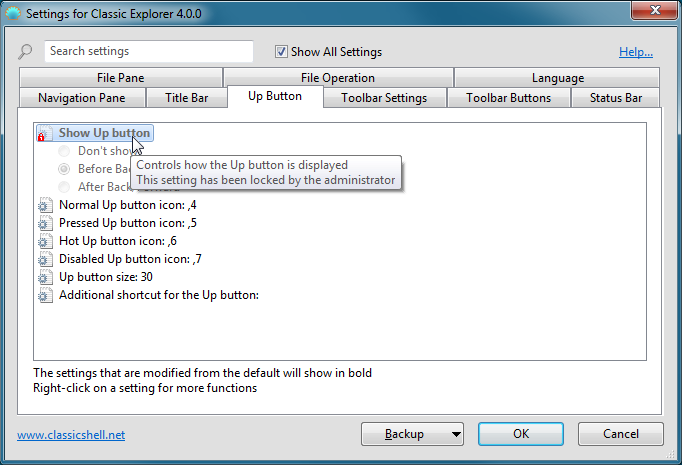

Classic Explorer
Classic Explorer
Classic
Explorer is a plugin for Windows Explorer that:
- Adds a toolbar to Explorer for some common operations (Go
to parent folder, Cut, Copy, Paste, Delete, Properties, Email). The toolbar is fully customizable
- Replaces the copy UI in Windows 7 with the more user-friendly “classic” version similar to Windows XP
- Handles Alt+Enter in the folder panel of Windows Explorer and shows the properties of the selected folder
- Has options for customizing the folder panel to look more like the Windows XP version or to not fade the expand buttons
- Can show the free disk space and the total file size in the status bar
- Can disable the breadcrumbs in the address bar
- Fixes
a long list of features that are broken in Windows 7 – missing icon
overlay for shared folders, the jumping folders in the navigation pane,
missing sorting headers in list view, and more
New copy UI (Windows 7 only)
In Vista when you copy files and there is a conflict you are presented
with this:

What’s wrong with it?
Well, for
starters it is half a screen full of text that you have to read. Also
it is not immediately clear what parts of it are clickable. You have to
move the mouse around to discover the UI like in a Lucas Arts
adventure game. And finally the keyboard usability is awful. To
tell it
“yes, I know what I’m doing, I want to overwrite all files” you have to
press Alt+D, up, up, up, Space! It is harder than performing the Akuma
Kara Demon move in Street Fighter 3. There is a time and a place
for
that stuff and copying files is not it.
The Classic Explorer plugin brings back the simpler dialog box from Windows XP:

It
is immediately clear what is clickable (clue – the buttons at the
bottom), there is easy keyboard navigation (press Y for “Yes”, A to
copy all files) and you can still see which file is newer and which is
larger. And of course just like in Windows XP, holding down Shift while clicking on the No button means "No to All" (or just press Shift+N).
If you click
on More… you will get
the original dialog from Windows. From there you
will see all the details and you’ll get an extra option to “Copy, but
keep both files”.
Important Note: Only the UI is replaced. The underlying system that does the actual copying is not affected.
Alt+Enter in the folder panel
Alt+Enter is
universal shortcut across Windows to bring up the properties of the
selection. But newer versions of Windows it doesn’t work in the left
panel that shows the folders. It works fine on the right where the
files are. This is broken compared to Windows XP where Alt+Enter works
in both places.
To solve the
problem, the Classic Explorer plugin detects when you press Alt+Enter
and shows the properties for the currently selected folder.
Toolbar for Windows Explorer
Windows
Explorer in Vista doesn’t have a toolbar like the one in Windows XP. If
you want to go to the parent folder you have to use the breadcrumbs
bar. If you want to copy or delete a file with the mouse you have to
right-click and look for the Delete command. The right-click menu gets
bigger and bigger the more shell extensions you have installed, and
finding the right command can take a while.
To solve the problem, the Classic Explorer plugin adds a new toolbar:

The available button are: Go Up, Cut, Copy, Paste, Delete, Properties,
Email, Settings. More buttons can be added from the Settings dialog.
Hints:
- Hold the Control key when clicking the Up button to open the parent folder in a new Explorer window.
- Hold the Shift key when clicking the Delete button to permanently delete a file
The new toolbar doesn’t show up in Explorer automatically after
installation. You have to do a few things before you can use it:
- Open a new Windows Explorer window (Win key+E)
- Turn on the menu in Explorer – Go to Tools (Alt+T), Folder
Options, the View tab, and make sure “Always show menus” is checked.
- Right click on the menu bar and select “Classic Explorer Bar” to
show the toolbar.
- If that option is not available (you only see “Lock the
Toolbars”) you may have to enable the plugin from Internet Explorer.
Run IE, right click on its toolbar and select “Classic Explorer Bar”.
It will ask you if you want to enable this add-on. Select “Enable”,
then repeat steps 1 through 3 again.
- If even then you don't see the toolbar, maybe the browser
extensions are disabled on your system. This is usually the default for
servers. Open the "Internet Options", go to the "Advanced" tab, and check
the option "Enable third-party browser extensions".
Status bar
Classic Explorer restores the original Explorer status bar that shows the free disk space and the size of the selected files:

Unlike the built-in status bar, the selection size is shown even if
more than 100 files are selected. When no files are selected the total
size of all files in the folder is shown.
Windows 7 note: Classic Explorer enhances the
default status bar instead of replacing it. To see it, you have to turn
it on first from the View menu.
The status bar is different from the blue
Details Pane you see at the bottom of Explorer. You can turn off the
Details Pane from the Organize menu to save space. Also there is a bug
in the Windows 7 Explorer that sometimes doesn't show any text in the
status bar. Press F5 to refresh the view and get the status text.
Windows 8 note: Classic Explorer adds its own
status bar. You should hide the default status bar to save space.
Select the View tab in the ribbon, then click on Options. Select the
View tab in the options. Locate the checkbox "Show status bar" and
uncheck it.
Settings
You can access the settings of Classic Explorer from the toolbar or from the start menu:

You can choose from seeing only the basic settings, or all
available settings. Hover over each setting to see a description of
what it's for. Type in the search box to find a setting by name.
Every setting has a default value. The default value can be constant,
or it may depend on the current system settings. Once you edit a
setting it becomes "modified" and is shown in bold. To revert to the
default value, right-click on the setting.
You can save the settings to an XML file, and later load them back.
Press the Backup button to access these functions. From there you can
also reset all settings to their default value.
Press OK to store your settings. Most of the settings will be applied
the next time you open a new Explorer window. Small number of settings
will require a log off before you can see the change.
Note: All Settings windows are resizable. Resize them and place them where you want them to be. They will remember the new position.
Here's one example of what can be customized:

Click on the Toolbar Buttons tab to customize the toolbar:
The column on the left shows the current buttons in the toolbar,
and the column on the right lists the buttons you can add to the
toolbar. You can drag and drop buttons from the right column to the
left. You
can rearrange the buttons by dragging them up and down. If you drop one button inside another you will create a sub-menu.
Hover over each
button to see a short description of what it does. Right-click on each
button to access more functions (like Delete, Rename, etc). From the
right-click menu you can also reset the toolbar to the original state.
Each item in the left column must have a unique name. This is the
identifier of the item and can only contain English letters, digits and
underscore. Some items (like SEPARATOR) cannot be renamed.
Important Note: Not all available commands have default icons or text. That's because Windows doesn't have icons for things like Undo, Select All, etc. If you want to use such buttons in your toolbar you will have to provide your own icon. See below how to do it.
After you place a button in the toolbar, you can edit it's attributes. Double-click on the button to edit:
Here you can select a command for the button, its text and icon. Press the Restore Defaults button to get the default text and icon for the chosen command.
The command can be:
- left blank - then if the link attribute is used, it will act as a command
- one of the predefined commands - from the dropdown
- open <some folder> - this will open the folder in the current browser
- sortby <property> - this will sort the folder by the given property - name, type, size or date. Use '-' in front of the property to sort in descending order: "sortby -name". You can use other properties if you know their code. For example "sortby {B725F130-47EF-101A-A5F1-02608C9EEBAC}, 10" is the same as "sortby name". For more property codes refer to the file propkey.h in the Windows SDK (also found here - scroll down to the "Full property table"). Not all property codes are valid or supported (for example the album year property {56A3372E-CE9C-11D2-9F0E-006097C686F6}, 5 only works when showing music albums)
- groupby <property> - similar to sortby, but groups the files by a given property. Use the command groupby with no property to disable the grouping
- custom executable string
- this can be a name of a program and its arguments, or even a URL
(like http://www.google.com). You can use environment variables like %SystemRoot%. You can also use the
placeholders %1, %2, %3, %4 and %5:
- %1 is the path of the
current folder. Keep in mind that if the current folder is a root of a
drive it will end with a backslash (like C:\)
- %2 is the path of the selected file (only when a single file is
selected)
- %3
is a name of a temporary text file that contains all selected files.
Each line in the text file contains one file with its full path
- %4
is the same as %3, but the file is in Unicode (UTF16) format. The file
contains no byte order mark. %3 and %4 can't both be used by the same command
- Note to developers: When
%3 or %4 is used, it is the responsibility of the command to delete the
temporary file when it finishes. Otherwise the temp file will be left
behind and waste disk space. Also if the command is a console application
or a batch file it will be launched in silent mode with no console
window
- %5 is a name of a
temporary text file, which can be used to return a command back to
Classic Explorer. If the first 2 bytes of the file are 255 and 254, the
file is treated as Unicode. Only one command can be used at a time. The command
can be:
- open <folder name> - causes Explorer to navigate to the given folder
- select <list of file names>
- selects the given files, deselects the rest. The file names must be
separated by a tab or a newline character. The files should not contain
a path. If they do, the path will be ignored
- refresh - refreshes Explorer
- Note to developers:
commands using %5 will run in silent mode (like commands using %3 or
%4) but
also Explorer will wait for the process to finish. The process must
finish as quickly as possible, because Explorer will be frozen during
the execution of the command
- See the next section for a few examples how to use these parameters
The link can be a path to a file or a folder. If it is a file, that
file will be executed. If it is a folder, that folder will be opened as
a sub-menu (only for top-level buttons).
The icon can be:
- left blank - then if the link attribute points to a file or a folder, the icon of that file or folder will be used
- resource file,icon ID - for example %windir%\notepad.exe,2. Do not leave space between the file name and the comma. Make sure you are using the icon's resource ID, and not the icon's index. For best results use the [...] button next to the icon box
- ,icon ID - same as above, but the resource file is the ClassicExplorer.dll itself. This is useful when referring to Classic Explorer's own icons
- icon file - for example C:\Program Files\Mozilla Thunderbird\Email.ico
- none - this will use a blank icon
If the label or the tip attribute start with $ (dollar sign), then the
system will treat it as a name of a string in the ExplorerL10N.ini
file. The actual text will depend on the current language setting. This
is useful when creating a toolbar that can be used by multiple languages.
Note to developers: Buttons for custom commands can be checked or disabled. The toolbar checks the registry key HKCU\Software\OpenShell\ClassicExplorer
for a DWORD value with the name of the button (the name used in left
column). 0 means normal, 1 is disabled and 2 is checked. The toolbar
reads the registry keys on startup. To force the buttons to update
their state after that you need to find all Explorer windows, locate
the child window with class OpenShell.CBandWindow, and post a message WM_CLEAR. This is useful if you are developing a custom exe to be used by the toolbar.
Examples for Custom Commands
0) Use quotes when necessary
In order to support paths that
contain spaces, you should use quotes around the path parameters. The
quotes are not always required, like in examples 1 and 2 below. Make
sure you test your commands with paths containing spaces to avoid
surprises.
1) Print the current folder
Use this command: cmd.exe /k echo %1. %1 will be replaced by the path of the current folder.
2) Open the selected file in Notepad
Use this command: %SystemRoot%\notepad.exe %2.
%2 will be replaced by the full name of the selected file. It doesn't
need to be in quotes because Notepad uses the whole command line as a
file name.
3) Copy selected files to the parent folder
Create a batch file called C:\CopyParent.bat:
set list=%1
set list=%list:"=%
for /F "delims=" %%i in (%list%) do copy /Y "%%i" ..
del %1
Use this command: C:\CopyParent.bat "%3".
%3 will be replaced by a text file containing the full names of all
selected files. The batch file will read each line of that text file,
and copy each of the selected files to the parent folder. At the end
the batch file deletes the initial
temp file. The first two set commands remove the quotes from the %1 parameter.
4) Select all text files
Create a batch file called C:\SelectText.bat:
echo select > %1
dir *.txt /b >> %1
Use this command: C:\SelectText.bat "%5".
%5 will be replaced by a blank text file, where the command must output
the word "select" and a list of files it wants to select. The "dir
*.txt /b" command provides that list.
Administrative Settings
The settings are
per user and are stored in the registry. By default every user can edit
all of their settings. An administrator can lock specific settings, so
no user can edit them:

In this example the setting "Show Up button" is locked to always be
"Before Back/Forward" and can't be changed by any user. This is achieved
by adding the setting to the HKEY_LOCAL_MACHINE\SOFTWARE\OpenShell\ClassicExplorer registry key. Create a string value called "ShowUpButton" and set it to "BeforeBack".
In some cases you may not want to lock the value for all users, but
simply modify the initial value of the setting. In such case add
"_Default" to the name of the value. For example if you want the Up
button to be before Back by default but still allow the users to change
it if they wish, create a string value named "ShowUpButton_Default" and
set it to "BeforeBack".
The easiest way to know the registry name of a setting and its value is to modify it, and then look it up in HKEY_CURRENT_USER\Software\OpenShell\ClassicExplorer\Settings.
Sometimes you may want to lock a setting to its default value, but you
don't know what the default value is. Then create a DWORD value and set
it to 0xDEFA.
There is also a global setting EnableSettings. Set it to 0 in the
registry to prevent the users from even opening the Settings dialog:

You can enable or disable Classic Explorer for individual processes
using the 2 registry settings "ProcessWhiteList" and
"ProcessBlackList". ProcessWhiteList is
a list of processes for which Classic Explorer will load. Use only the
file name of the process (like "notepad.exe"), separate multiple names
with a comma or a semicolon. ProcessBlackList
is a list of processes for which Classic Explorer will not load. You
should only use one of the two lists. If both lists are specified, the
black list will be ignored. The lists are only used when you enable the
features that are supported for processes other than Explorer. At the
moment these features are: the shared overlay icon and the replacements
for the copy dialogs.
Editing the settings through group policies is also supported. Extract the file PolicyDefinitions.zip found in the installation folder and read the document PolicyDefinitions.rtf for more details.
Dependencies on Windows settings
Some Classic Explorer settings require specific Windows settings to be enabled:
- Windows Vista navigation pane style - requires Windows to be using Aero or Basic theme
- Auto-navigate to the selected folder
- this setting can be set to "Always" only when Explorer is set to
"Automatically expand to current folder". Look for it in the General tab of Tools -> Folder Options
- Show caption in the title bar
- the caption will show either the full path name or only the name of
the current folder. To see the full path you need to enable "Display
the full path in the title bar (Classic theme only)" in the View tab of Tools -> Folder Options
- All status bar settings - require the status bar to be visible (not to be confused with the Details Pane). Check View -> Status bar
Localization
The user
interface (except the Settings dialog box) is localized in 35
languages.
The Settings dialog box is translated in a smaller number of languages.
The default installation contains only English. More languages can be
downloaded from the translations page. Make sure you download the translation package for the exact version of Open-Shell.